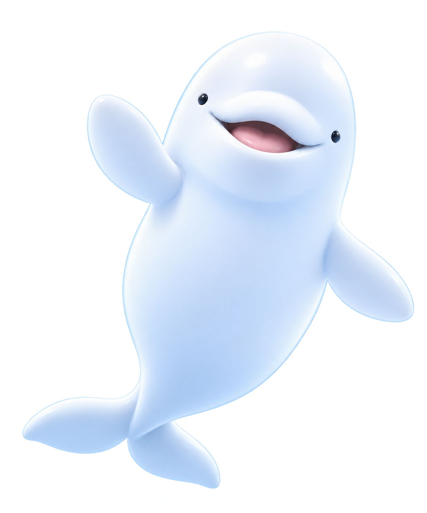

SEONIN · PERSONAL PORTFOLIO01 / INTRO
SEONIN02 / ABOUT
About
프론트엔드 개발자 유선인입니다.
- PROFILE 01 / WHO I AM
- 유선인 · SEONIN
- SKILLS
- INTERESTS 02 / WHAT I LOVE
- 사용자 경험
자연스러운 웹 인터랙션

GO BEYOND THE SURFACE.NEXT / PORTFOLIO ↓
SEONIN03 / PORTFOLIO
Portfolio
작은 아이디어가,
새로운 경험이 되는 곳.
01 / WEB DESIGN
Haevichi
쉼의 순간을 담은 호텔 웹사이트
02 · 03은 콘셉트 예시입니다.
IDEAS BECOME EXPERIENCES.NEXT / CONTACT ↓
SEONIN04 / CONTACT
Contact
함께 만들 다음 이야기를 기다립니다.
Skills
- HTML
- CSS
- JavaScript
- React
- Figma
새로운 연결은 언제나 환영합니다.
BACK TO THE SURFACE ↑THANK YOU FOR DIVING IN.